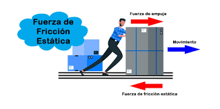
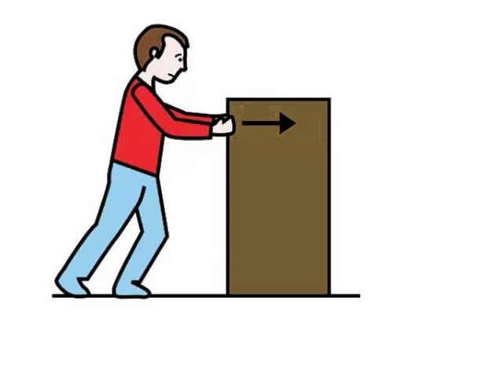
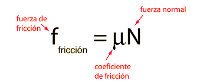

Coeficiente de fricción
El coeficiente de fricción (μ) es un número que indica cuánta resistencia al movimiento existe entre dos superficies que están en contacto. Este valor no tiene unidades y depende de las propiedades de los materiales y de cómo son sus superficies. Si las superficies son rugosas o suaves, o si los materiales tienen diferentes características, el coeficiente de fricción cambiará. Un valor más alto significa mayor resistencia al movimiento, mientras que un valor bajo indica menos resistencia.
El coeficiente de fricción estático (o de arranque) está relacionado con la fuerza necesaria para iniciar el movimiento de deslizamiento. Por lo general, ésta es la fuerza máxima de la prueba. El coeficiente de fricción cinética (o deslizamiento) es la fuerza media medida durante el movimiento
El coeficiente de fricción dinámico (µk) se utiliza cuando el objeto se mueve a lo largo de la superficie. Se determina la fuerza requerida para mantener el cuerpo en movimiento sobre la superficie, a una velocidad constante.
Tipos de Fricción y sus Características:
Fricción Estática:
Es la resistencia que se opone al inicio del movimiento entre dos superficies en contacto. Esta fuerza debe superarse para que el objeto comience a moverse. La fricción estática aumenta con la rugosidad de las superficies y se mantiene hasta cierto límite antes de dar paso al movimiento.

Fricción Dinámica o Cinética:
Actúa cuando ya existe movimiento relativo entre las superficies en contacto. Es generalmente menor que la fricción estática y depende de factores como la velocidad y el tipo de materiales. Este tipo de fricción se sigue oponiendo al movimiento, pero con menor intensidad que la fricción estática.

Fricción en Deslizamiento
La fricción en deslizamiento es un fenómeno complejo que depende de varios factores:
- Rugosidad de las superficies
- Temperatura de contacto
- Velocidad relativa
- Presión de contacto
- Condiciones ambientales
Fórmulas para Fricción en Deslizamiento:
- Fuerza de fricción básica:

- Trabajo realizado por la fricción: W = f × d
- Potencia disipada por fricción: P = f × v
- Coeficiente de fricción dependiente de la velocidad: μ(v) = μₖ + (μₛ - μₖ)e^(-cv)
- Pérdida de energía por fricción: E = f × d = μmgd
Ecuaciones de Movimiento con Fricción:
- Aceleración en plano horizontal: a = (F - μₖN)/m
- Distancia de frenado: d = v²/(2μₖg)
- Velocidad terminal en plano inclinado: v_t = √((mg sin θ)/(k))
- Tiempo de detención: t = v₀/(μₖg)
Aplicaciones Prácticas:
Diseño de Frenos y Embragues: La fricción es esencial en frenos de automóviles y sistemas de embrague, donde se requiere controlar la velocidad o detener el movimiento mediante superficies en contacto.
Factores que Afectan el Deslizamiento:
- Lubricación y sus efectos en el coeficiente de fricción
- Desgaste de superficies durante el deslizamiento prolongado
- Efectos térmicos en el contacto entre superficies
- Influencia de la carga normal en el comportamiento friccional
Fórmulas importantes:
- Fuerza Normal (N) = masa × gravedad
- Fuerza de Fricción (f) = μ × N
- Fuerza Neta = Fuerza aplicada - Fuerza de fricción
¿Cómo funciona el simulador?
Este simulador permite calcular diferentes resultados basados en la interacción de materiales, voltaje, distancia y peso de bloques. A continuación, te explicamos cómo usar cada sección del simulador.
- Material: Selecciona el material con el que estás trabajando. Puedes elegir entre Plástico, Corcho o Paño. Cada material tiene diferentes propiedades que afectarán los resultados.
- Voltaje (V): Ingresa el valor del voltaje en voltios (V) que se está utilizando en el sistema.
- Distancia (cm): Introduce la distancia en centímetros.
- Peso del Bloque B (g): Ingresa el peso del bloque B en gramos.
Acciones adicionales:
- Calcular: Una vez que hayas completado todos los campos, haz clic en este botón para calcular los resultados.
- Iniciar Simulación: Haz clic en este botón para visualizar la simulación interactiva basada en los datos que has ingresado.
- Resetear: Si deseas empezar de nuevo, haz clic en este botón para borrar todos los datos y restablecer el simulador.
Resultados:
Los resultados se mostrarán en la sección de resultados, tanto de forma visual (simulación) como numérica.
Resultados
Los resultados se mostrarán aquí...